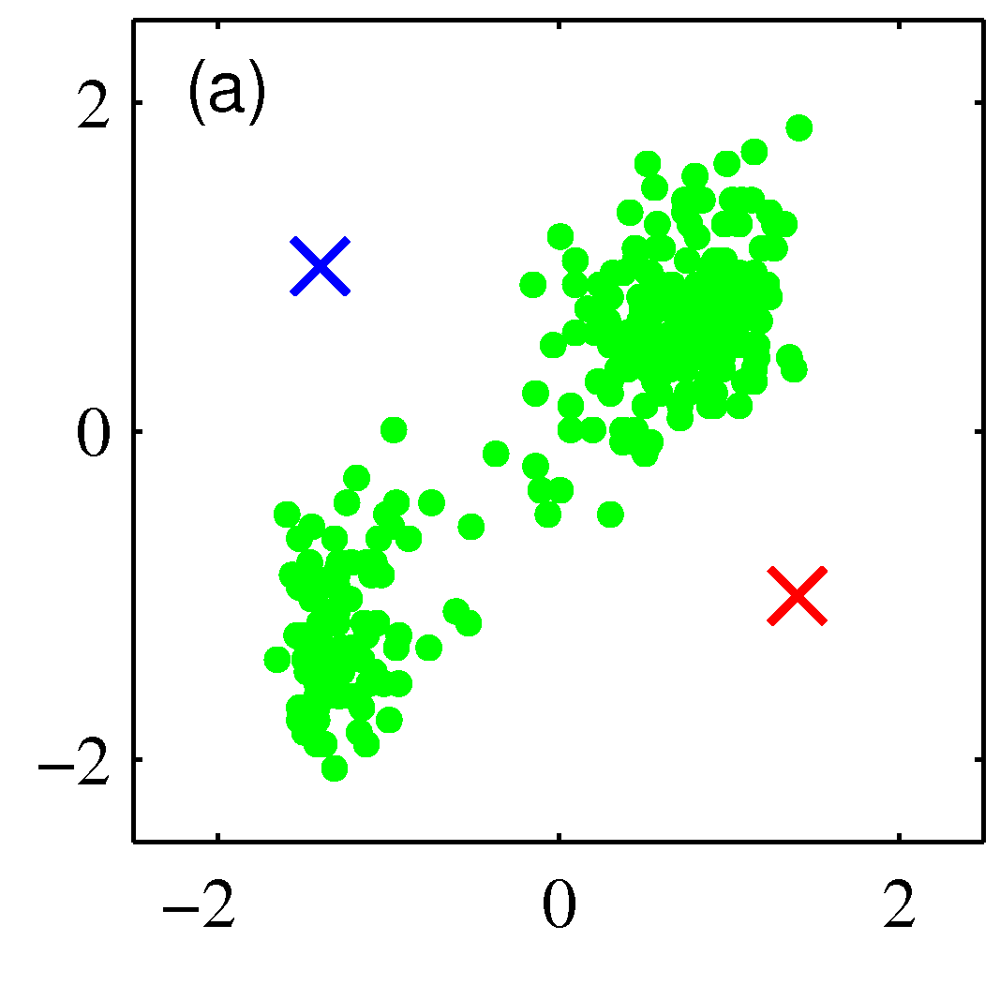
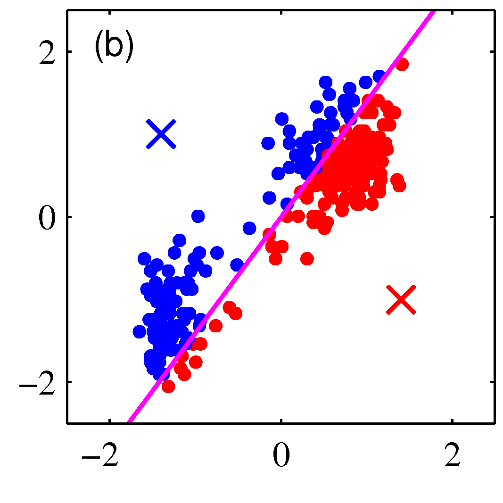
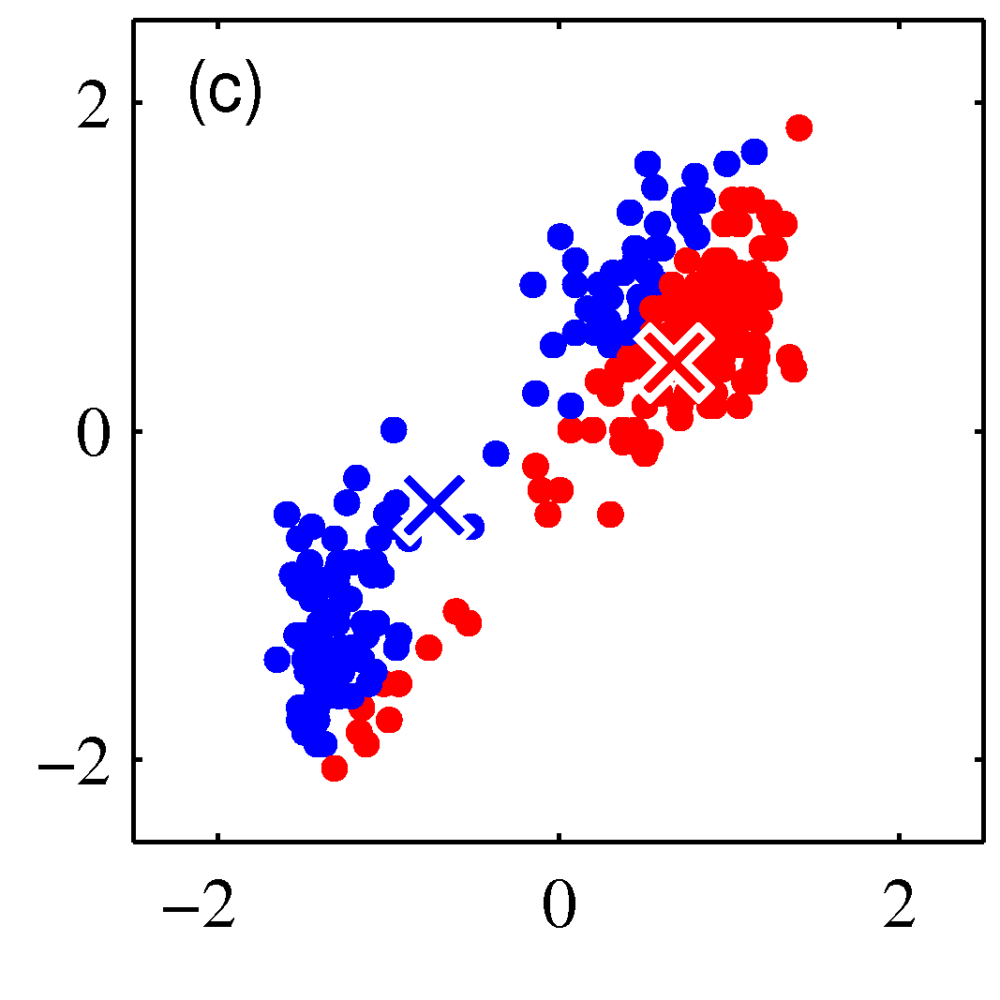
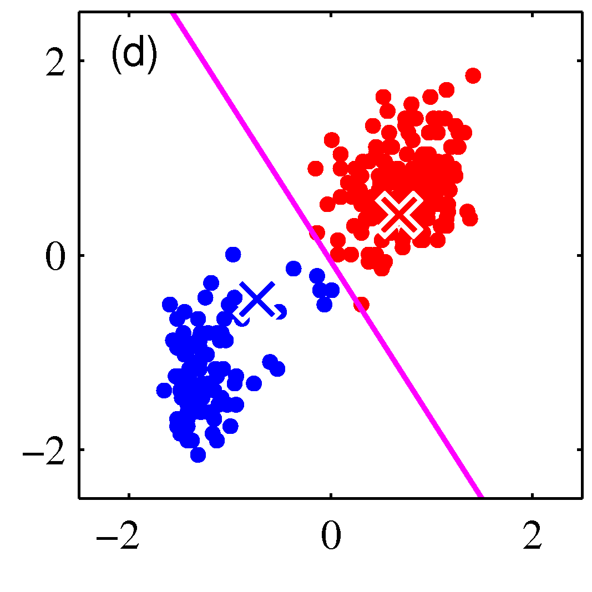
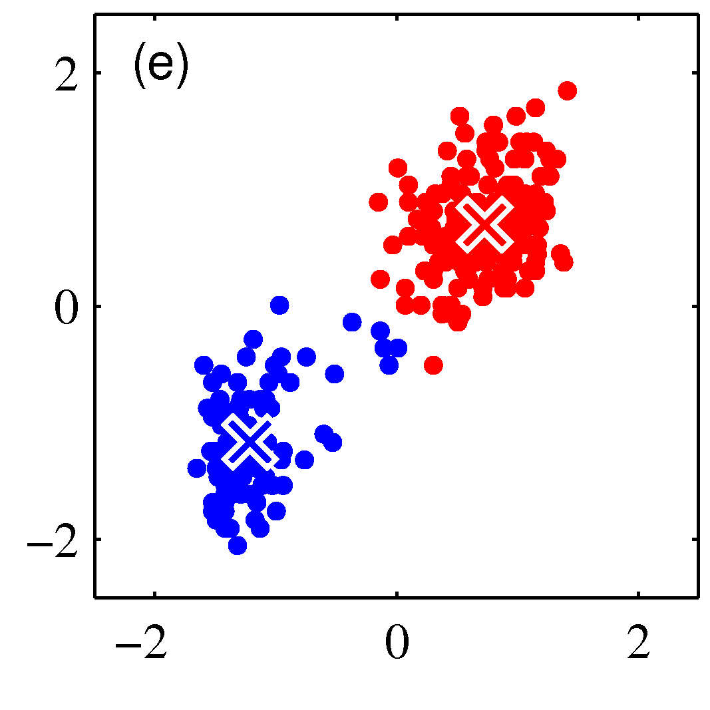
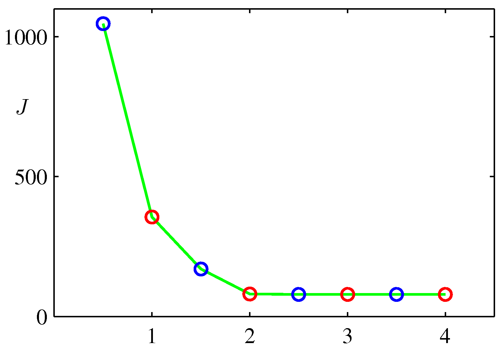

K-means Clustering
Up to now in this lecture series we have seen parametric models using in regression and classification. The complexity of such models was not very high despite the heany sometimes math. Most models we have seen took the form $\mathbf w^T \phi(\mathbf x)$. Now we switch to a very frequently met case where we dont have any labels $y$. Most of the treatment here is from Bishop section 9.1 - the equivalent section in Tan’s book is section 7.2.
Suppose we have a data set $D={ \mathbf x_1,…,\mathbf x_m}$ consisting of $m$ observations of a random n-dimensional Euclidean variable $\mathbf x$. Our goal is to partition the data set into some number $K$ of clusters, where we shall suppose for the moment that the value of $K$ is given. Intuitively, we might think of a cluster as comprising a group of data points whose inter-point distances are small compared with the distances to points outside of the cluster. This is shown in the figure below.

We can formalize this notion by first introducing a set of n-dimensional vectors $\mathbf \mu_k$ where $k ={1,…,K}$, in which $\mathbf \mu_k$ is a prototype associated with the kth cluster. We can think of the $\mathbf \mu_k$ as representing the centres of the clusters. Our goal is then to find an assignment of data points to clusters, as well as a set of prototypes. To do so we need to define as before a loss function.The loss function is selected to be the sum of the squares of the distances of each data point to its closest vector $\mathbf \mu_k$ is a minimum.
$L = \sum_{i=1}^m \sum_{k=1}^K r_{ik} ||\mathbf x_i - \mathbf \mu_k||^2$
Everything is as expected in the loss function above expept from the variable $r_{ik}$ which is a binary *indicator* variable that will simply add the squared Euclidean distance between the point $\mathbf x_i$ and the candidate cluster prototype if the point is assigned to that cluster or add 0.0 to the loss if it doesnt. As an example for two cluster prototypes (as evidently will be the number of clusters in the above example) $r_k \in {(0 1), (1 0)}$. This is also called one-hot encoding of the corresponding category where category “cluster 1” is coded as $(0 1)$ and category “cluster 2” is coded as $(1 0)$.
The K-means algorithm is iterative and each iteration includes two steps after an initialization of the $\mathbf \mu_k$ to random locations.
Step 1
We go over each data point $\mathbf x_i$ and we assign it to the closest custer center for this iteration.
 Iteration 1, Step-1: Assignment of data points to cluster centers
Mathematically this means determining:
$$r_{ik} = \begin{cases}1, & \text{if } k = \arg \min_j ||\mathbf x_i - \mathbf \mu_j||^2\ 0, & \text{otherwise. } \end{cases}$$
Step 2
In the second step we move each cluster center to the average of the data points assigned to that cluster. Mathematically this is:
$$ \mathbf \mu_k = \frac{\sum_i r_{ik} \mathbf x_i}{\sum_i r_ik}$$
 Iteration 1, Step-2: Moving the cluster centers to the mean of the data points assigned to each cluster
The following figures show subsequent steps until its becoming clear that the algorithm will convergence.
 Iteration 2, Step-1: Assignment of data points to cluster centers
 Iteration 2, Step-2: Moving the cluster centers to the mean of the data points assigned to each cluster
The algorithm will converge as shown below:
 Blue circles (Step 1), interleaved with red circles (step 2) towardds k-means alg convergence